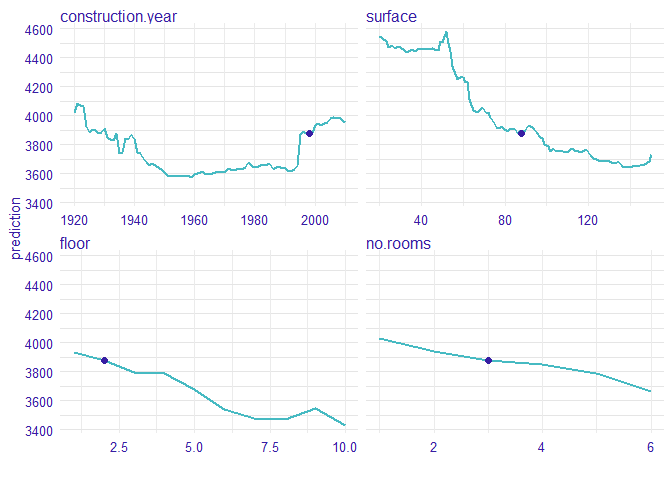
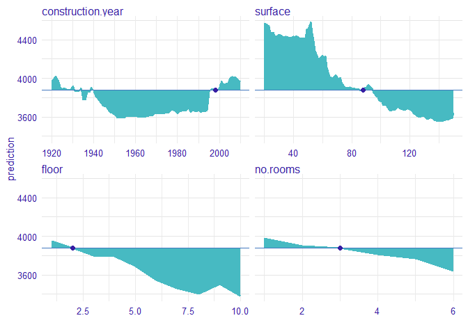
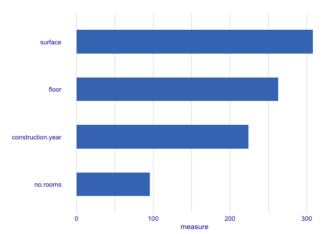

Overview
This package helps to calculate instance level variable importance (local sensitivity). The importance measure is based on Ceteris Paribus profiles and can be calculated in eight variants. Select the variant that suits your needs by setting parameters: absolute_deviation, point and density.
vivo is a part of DrWhy collection of tools for Visual Exploration, Explanation and Debugging of Predictive Models.
Intuition
Ceteris Paribus is a latin phrase meaning „other things held constant” or „all else unchanged”. Ceteris Paribus Plots show how the model response depends on changes in a single input variable, keeping all other variables unchanged. They work for any Machine Learning model and allow for model comparisons to better understand how a black model works.
The measure is based on Ceteris Paribus profiles oscillations. In particular, the larger influence of an explanatory variable on prediction at a particular instance, the larger the deviation along the corresponding Ceteris Paribus profile. For a variable that exercises little or no influence on model prediction, the profile will be flat or will barely change.
Let consider an example
2 Build a model
We define a random forest regression model.
library("randomForest")
#model
apartments_rf_model <- randomForest(m2.price ~ construction.year + surface + floor +
no.rooms, data = apartments)
#explainer from DALEX
explainer_rf <- explain(apartments_rf_model,
data = apartmentsTest[,2:5], y = apartmentsTest$m2.price)## Preparation of a new explainer is initiated
## -> model label : randomForest ([33mdefault[39m)
## -> data : 9000 rows 4 cols
## -> target variable : 9000 values
## -> predict function : yhat.randomForest will be used ([33mdefault[39m)
## -> predicted values : numerical, min = 2129.022 , mean = 3515.944 , max = 5288.179
## -> residual function : difference between y and yhat ([33mdefault[39m)
## -> residuals : numerical, min = -1238.443 , mean = -4.420374 , max = 2126.688
## [32mA new explainer has been created![39m3 Ceteris Paribus profiles
Now, we calculate Ceteris Paribus profiles for new observation.
new_apartment <- data.frame(construction.year = 1998, surface = 88, floor = 2L, no.rooms = 3)
library("ingredients")
#calculate ceteris paribus profiles
profiles <- ceteris_paribus(explainer_rf, new_apartment)
#plot ceteris paribus
plot(profiles) + show_observations(profiles)
4 Measure based on Ceteris Paribus profiles
The value of the colored area is our measure. The larger the area, the more important is the variable.

We calculated measure with absolute_deviation, point and density parameters equal to true. This means that the deviation is calculated as a distance from observation, not from the average. Measure is weighted based on the density of variable and we use absolute deviation.
library("vivo")
#calculate measure with all parameter are true
measure <- local_variable_importance(profiles, apartments,
absolute_deviation = TRUE, point = TRUE, density = TRUE)
plot(measure)
For the new observation the most important variable is surface, then floor, construction.year and no.rooms.